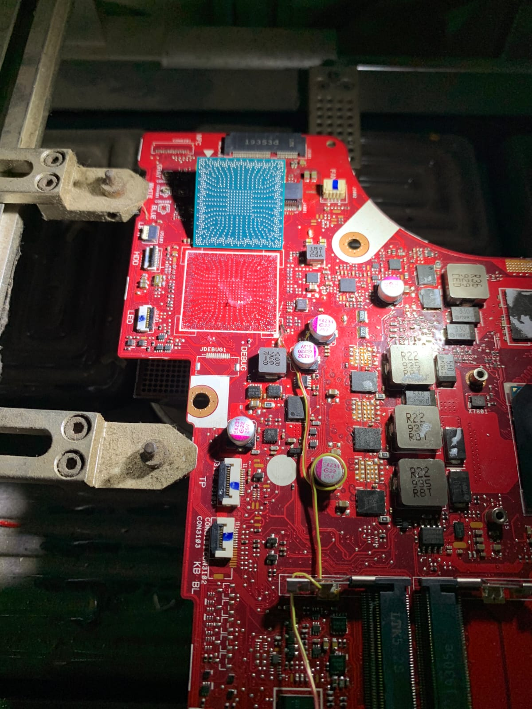

Service Laptop Cibeureum & Sekitar Tasikmalaya
Ditulis oleh Benua Komputer · Spesialis Service Laptop Tasikmalaya

Cari service laptop Cibeureum yang dekat, terpercaya, dan bisa ditunggu? Benua Komputer melayani warga Tasikmalaya dan sekitarnya langsung dari workshop kami di Awipari, Kec. Cibeureum — mudah dijangkau dari berbagai kecamatan.
Wilayah yang Kami Layani
Kami melayani service laptop Tasikmalaya untuk area:
| Kecamatan / Wilayah | Keterangan |
|---|---|
| Cibeureum | Sangat dekat — datang langsung |
| Singaparna | ±15 menit, bisa konsultasi WA dulu |
| Indihiang | Layanan antar-jemput bisa diatur |
| Mangkubumi | Bisa ditunggu di workshop |
| Kawalu & Tamansari | Konsultasi gratis via WA |
| Rajapolah, Ciamis, Garut | Via pengiriman / kordinasi WA |
Layanan Service Laptop
- Mati total & tidak mau nyala — lihat penyebab & biayanya.
- Ganti layar / LCD-LED — cek estimasi biaya.
- Install ulang Windows/macOS, virus, lemot.
- Service mainboard, reballing VGA, ganti IC power.
- Ganti baterai, keyboard, port charger, hinge.
Kenapa Pilih Benua Komputer?
Teknisi berpengalaman, pengerjaan bisa ditunggu untuk kasus ringan, hasil bergaransi, dan harga transparan. Kami juga membantu mengenali ciri laptop yang sudah harus di-service agar kerusakan tidak makin parah.
Hubungi sebelum datang
WhatsApp 0821-1475-2228 untuk cek ketersediaan & perkiraan biaya.
Alamat & Jam Operasional
Jl. Raya Awipari Tengah RT03/RW03, Awipari, Kec. Cibeureum, Kota
Tasikmalaya.
Buka Senin–Sabtu 08.00–20.30.
FAQ
Bisa antar-jemput?
Bisa, khusus area
Tasikmalaya kota & sekitar (koordinasi WA).
Berapa lama?
Ringan 1–2 jam, mainboard
1–3 hari kerja.
Baca juga: 7 Ciri Laptop Harus Di-service · Ciri Laptop Mati Total & Biaya · Service MacBook Tasikmalaya
Booking Service Sekarang →